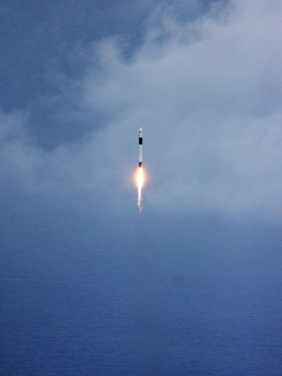
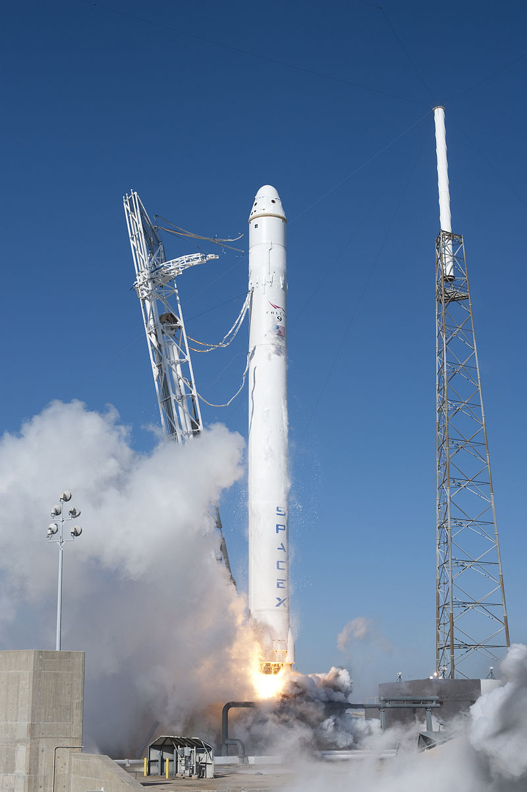

Історія компанії
SpaceX — американське аерокосмічне приватне підприємство, що займається будівництвом космічного транспорту, наданням космічних транспортних та комунікаційних послуг. SpaceX є виробником ряду ракет-носіїв, зокрема, сімейства Falcon та двигунів для них, а також космічних кораблів Dragon (у вантажному та пілотованому варіантах). Крім цього компанія розвиває мережу супутників Starlink, за допомогою яких надає послуги швидкого широкосмугового доступу до Всесвітньої мережі. Офіс розташовано в Готорні в Каліфорнії. Компанію створено Ілоном Маском в 2002 році з метою здешевлення виведення вантажів та людей на орбіту та колонізації Марсу в майбутньому.
Серед основних досягнень SpaceX: перша приватна ракета на рідкому паливі, що вийшла на орбіту Землі (Falcon 1, 2008), першість серед приватних компаній в доставлені на орбіту та приземлені космічного корабля (Dragon в 2010), першість серед приватних компаній, що відправили корабель до Міжнародній космічній станції (Dragon, 2012), першість в вертикальному зльоті і посадці орбітальної ракети-носія (Falcon 9 в 2015), першість в кількаразовому використанні орбітальної ракети-носія (Falcon 9 в 2017), перша доставка астронавтів до МКС приватною компанією (SpaceX Crew Dragon Demo-2, 2020). SpaceX запустила та використала для повторного запуску Falcon 9 вже понад сотню разів.
Підрозділ SpaceX «Starlink» займається виготовленням і запуском супутників зв'язку, що утворюють єдину мережу. Ця мережа робить високошвидкісний інтернет доступним навіть у віддалених від наземних комунікацій місцях. Станом на травень 2022 року SpaceX вже вивели на низьку навколоземну орбіту понад 2400 супутників «Starlink». Таким чином, це вже найбільше сузір'я супутників в історії. За планами компанії його розмір має вирости до кільканадцяти тисяч у найближчі роки
Рокети-носії
Falcon 1
Перший запуск ракети Falcon 1 планувався на авіабазі Ванденберг. Запуск носія був перенесений з VAFB через затримки і, в кінцевому підсумку, 24 березня 2006 року стартував з атолу Кваджалейн, що на Маршалових островах. Для Випробувального центру імені Рейгана, з якого відбувся пуск, це була перша спроба виведення ракетою на орбіту вантажу з цього майданчика.
Falcon 1 був невеликим, частково багаторазовим носієм, здатним виводити кілька сотень кілограмів на низьку навколоземну орбіту. Він також функціонував як стенд для розробки концепцій і компонентів для більшої ракети-носія Falcon 9.
Falcon 1 здійснив свій перший успішний комерційний політ з виведення корисного вантажу на орбіту 13 липня 2009. Це був п'ятий і останній запуск Falcon 1. З п'яти пусків між 2006 і 2009 роками лише 2 були успішними. Falcon 1 став першою приватною рідкопаливною ракетою-носієм, що досягла орбіти.
Falcon 9
8 вересня 2005 SpaceX оголосила про розробку Falcon 9 — ракети, що має дев'ять двигунів Merlin на першому ступені конкурує з ракетами Дельта IV і Atlas V. Обидві ступені були розроблені для повторного використання. Falcon 9 — це ракета-носій середнього класу, яка може, в залежності від конфігурації, вивести на низьку опорну орбіту від 10 450 до 22 800 кг.
Перший носій Falcon 9 був зібраний на мисі Канаверал 30 грудня 2008. Перший політ кілька разів відкладався і відбувся 4 червня 2010, о 2:50 вечора EST Falcon 9 успішно досяг орбіти. А вже третій старт Falcon 9 22 травня 2010 року COTS Demo Flight 2 успішно вивів вантажний космічний корабель Dragon на орбіту, після чого він стикувався з МКС. Це була перша доставка вантажу на станцію приватною фірмою.
22 грудня 2015 перший ступінь ракети-носія Falcon 9 Full Thrust, яка вивела на орбіту 11 супутників Orbcomm OG2, успішно здійснив посадку на спеціальний майданчик на мисі Канаверал. Це був перший в історії космонавтики запуск ракети-носія, яка вивела на орбіту корисне навантаження та здійснила м'яку посадку на землю.
Starlink
Starlink — проєкт щодо розробки високопродуктивної супутникової платформи для виготовлення супутників зв'язку та запусків великої їх кількості (сузір'я) у космос. Система надає доступ до широкосмугового інтернету у будь-якій точці планети. Першою компанія почала обслуговувати Канаду та США (2020).
Назва «Starlink» взята із роману Джона Ґріна «Провина зірок». Проєкт почався у 2015 році, а перші два супутники було запущено у тестовий політ 22 лютого 2018 року ракетою Falcon 9. Запуск наступної партії сателітів вже із 60-ти одиниць відбувся у травні 2019 року. У січні 2020 року SpaceX стала власницею найбільшої кількості супутників на орбіті (180 штук). До середини 2020-х років компанія планувала відправити на певні орбіти близько 12 тисяч апаратів, однак у 2019 році з'явилася інформація про заявку на ще 30 тисяч штук.
SpaceX допускає можливість продажу супутників, виготовлених на платформі Starlink, після чого ті зможуть використовуватися у наукових або військових цілях, а зароблені кошти Ілон Маск планує витратити на розробку ракети Starship для польотів на Марс. У майбутньому компанія має намір розмістити подібне сузір'я і на навколомарсовій орбіті